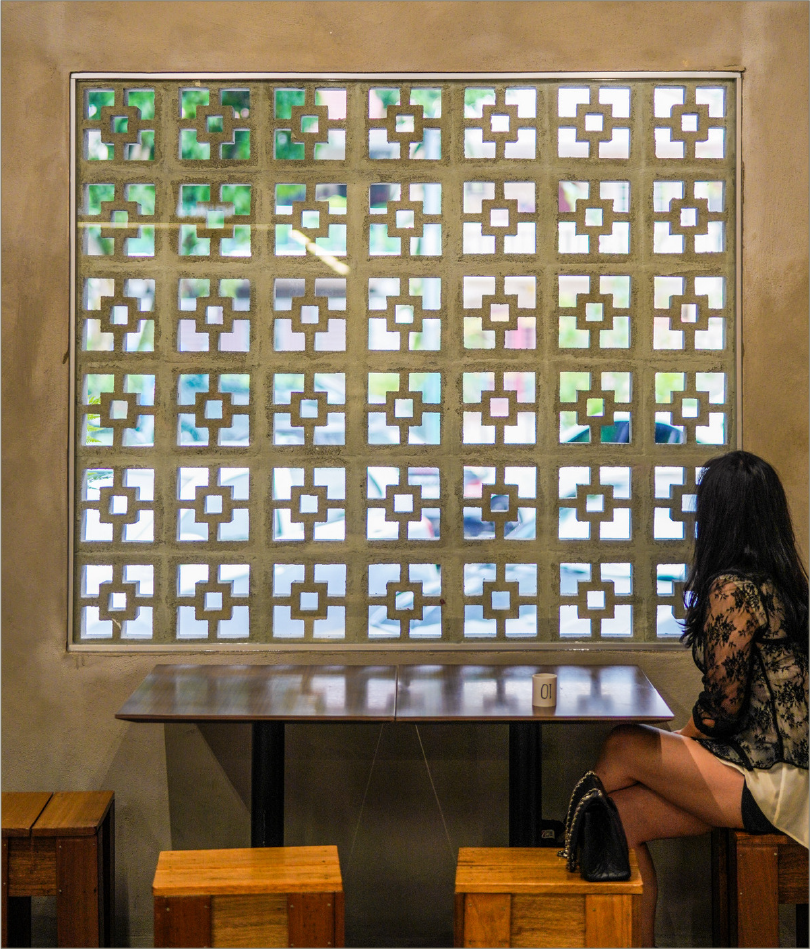
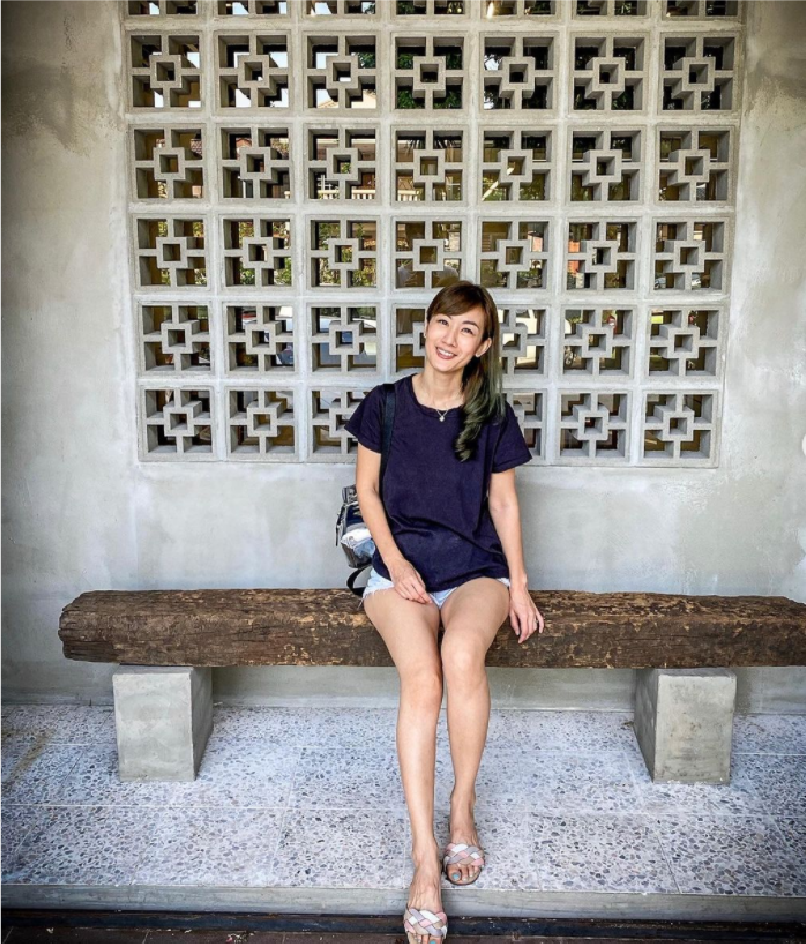

About
Operating Hour
Monday to Sunday
Wenesday Off
10am to 9pm
Location
5 - G, Jalan Margosa SD 10/4A,
Bandar Sri Damansara
52200 Kuala Lumpur, Malaysia
Fifty Tales, a contemporary restaurant in Bandar Sri Damansara that offers dai chow fare with an artisanal touch. This is a noodle bar located in Bandar Sri Damansara. We handmade the noodles daily. Through countless trials and errors to give you the perfect slurp of noodles.

Source: https://eatdrinkkl.blogspot.com/2020/06/fifty-tales-bandar-sri-damansara.html

Source: instagram @kellychong